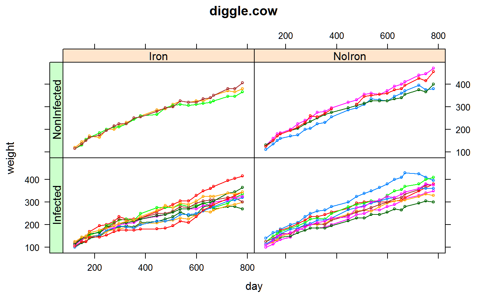

diggle.cow.RdBodyweight of cows in a 2-by-2 factorial experiment.
A data frame with 598 observations on the following 5 variables.
animalAnimal factor, 26 levels
ironFactor with levels Iron, NoIron
infectFactor levels Infected, NonInfected
weightWeight in (rounded to nearest 5) kilograms
dayDays after birth
Diggle et al., 1994, pp. 100-101, consider an experiment that studied how iron dosing (none/standard) and micro-organism (infected or non-infected) influence the weight of cows.
Twenty-eight cows were allocated in a 2-by-2 factorial design with these factors. Some calves were inoculated with tuberculosis at six weeks of age. At six months, some calves were maintained on supplemental iron diet for a further 27 months.
The weight of each animal was measured at 23 times, unequally spaced. One cow died during the study and data for another cow was removed.
Diggle, P. J., Liang, K.-Y., & Zeger, S. L. (1994). Analysis of Longitudinal Data. Page 100-101.
Retrieved Oct 2011 from http://www.maths.lancs.ac.uk/~diggle/lda/Datasets/
Lepper, AWD and Lewis, VM, 1989. Effects of altered dietary iron intake in Mycobacterium paratuberculosis-infected dairy cattle: sequential observations on growth, iron and copper metabolism and development of paratuberculosis. Research in veterinary science, 46, 289--296.
Arunas P. Verbyla and Brian R. Cullis and Michael G. Kenward and Sue J. Welham, (1999), The analysis of designed experiments and longitudinal data by using smoothing splines. Appl. Statist., 48, 269--311.
SAS/STAT(R) 9.2 User's Guide, Second Edition. http://support.sas.com/documentation/cdl/en/statug/63033/HTML/default/viewer.htm#statug_glimmix_sect018.htm
library(agridat) data(diggle.cow) dat <- diggle.cow # Figure 1 of Verbyla 1999 libs(latticeExtra) useOuterStrips(xyplot(weight ~ day|iron*infect, dat, group=animal, type='b', cex=.5, main="diggle.cow"))# Scaling dat <- transform(dat, time = (day-122)/10) # ---------------------------------------------------------------------------- if(0){ # asreml3 libs(asreml) # Smooth for each animal. No treatment effects. Similar to SAS Output 38.6.9 m1 <- asreml(weight ~ 1 + lin(time) + animal + animal:lin(time), data=dat, random = ~ animal:spl(time)) p1 <- predict(m1, data=dat, classify="animal:time", predictpoints=list(time=seq(0,65.9, length=50))) p1 <- p1$pred$pval p1 <- merge(dat, p1, all=TRUE) # to get iron/infect merged in foo1 <- xyplot(weight ~ day|iron*infect, dat, group=animal) foo2 <- xyplot(predicted.value ~ day|iron*infect, p1, type='l', group=animal) print(foo1+foo2) } # ---------------------------------------------------------------------------- if(0){ ## libs(asreml4) ## libs(latticeExtra) ## # Smooth for each animal. No treatment effects. Similar to SAS Output 38.6.9 ## m1 <- asreml(weight ~ 1 + lin(time) + animal + animal:lin(time), data=dat, ## random = ~ animal:spl(time)) ## p1 <- predict(m1, data=dat, classify="animal:time", ## design.points=list(time=seq(0,65.9, length=50))) ## p1 <- p1$pvals ## p1 <- merge(dat, p1, all=TRUE) # to get iron/infect merged in ## foo1 <- xyplot(weight ~ day|iron*infect, dat, group=animal) ## foo2 <- xyplot(predicted.value ~ day|iron*infect, p1, type='l', group=animal) ## print(foo1+foo2) }